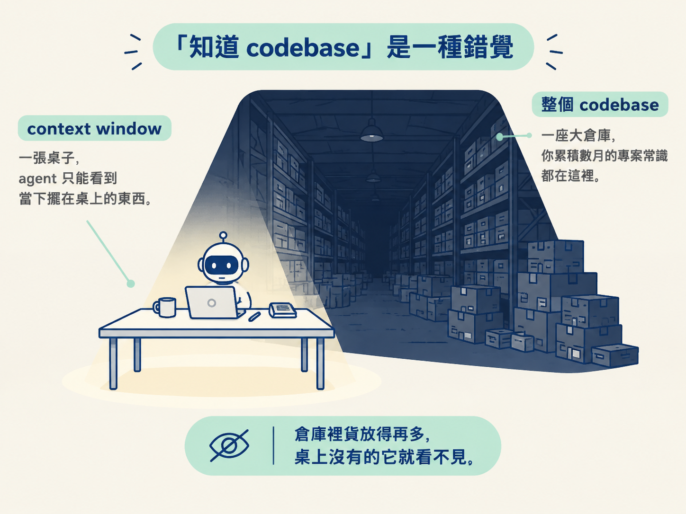
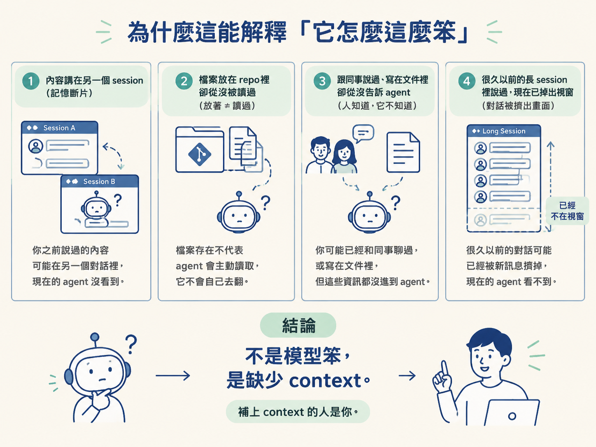

說出 agent 的 context window 裡實際裝了哪四種東西，並用「你沒說、它沒讀＝它不知道」判斷它當下到底知不知道某件事。
先回想一個真實場景。這個專案你做了好幾個月，auth 流程、命名慣例、上週二決定換掉金流供應商，這些全部在你腦子裡，你不需要回想，它們就在那裡。
某天你打開 agent，打一句「幫我修一下登入的問題」。結果它用了一個你早就淘汰的寫法，或者把你上週修好的東西又弄壞一次。
你心裡的念頭大概是：「這不是很明顯嗎？它應該要知道啊。」
這一節要處理的，就是這個「應該要知道」。因為 agent 並沒有你以為的那種「知道」。它不會像一個待久的同事那樣熟悉這個專案，它只知道當下載入它 context window 裡的東西，而那比「認識整個 codebase」要小得多，也脆弱得多。搞懂這件事，你才能開始判斷它到底缺了什麼。
上一課我們談到登入按鈕壞掉的那個 bug。你一看就懂：按鈕在登入表單裡、它呼叫了一個 handler、問題可能出在之前某次重構。這些背景知識，是你在幾秒內就拼出來的。
agent 一開始這些全不知道。它得靠 grep 搜尋、開檔、讀檔，一步一步爬到跟你一樣的起點。你累積了好幾個月的「專案常識」，對它來說根本不存在。
它不是笨，而是沒有人把那些東西放進它面前。
它唯一有的容器，叫做 context window（上下文視窗）。你可以把它想成一張桌子：agent 只能看到當下擺在桌上的東西，桌子之外的整個倉庫，它一無所知。你在倉庫裡放了再多貨，它看不見就是看不見。

任何一個當下，那張桌上只會有四種東西：
| 桌上有的 | 它是什麼 |
|---|---|
| 當前的對話 | 這次 session 裡你打的字、它回覆的字，全部算在內。 |
| 它實際讀過的檔案 | 不是整個 codebase，而是它透過 tool call 真正打開過的那幾個檔案。 |
| 你設定好的 always-on context | 例如一份 CLAUDE.md，前提是它存在、而且設定正確。 |
| 系統指令 | 工具本身出廠就帶的基準行為說明。 |
清單就這四項，沒有別的。
換句話說，下面這些東西都不在桌上：你上週在 Slack 跟同事聊的架構決定、放在 repo 裡但你從沒叫它讀的 README、你沒貼進來的那張 ticket、還有上一個 session 講過的話。除非你正在用某種記憶或交接機制，而且那個機制真的把內容捕捉下來了，否則它們就是不存在。
所以要判斷它知不知道你專案裡的某件事，只要問一個很直白的問題：你說了嗎？它讀了嗎？兩個都沒有，它就是不知道。
這條規則聽起來有點硬，但它精準得驚人。
回頭想那些讓你無言的時刻：它重新引入你早就修好的 bug、套用你團隊幾個月前就放棄的舊寫法、忽略一個你明明提過的限制。
幾乎每一次，真正的原因都是下面四種 context gap 之一：
看懂這四點，你會發現它們都不是「模型太笨」，而是缺了 context。

而 context 是可以補的。因為決定要放什麼上桌的人，是你。
當這件事真的想通，你下 prompt 前的直覺會改變。你不再預設「它應該會自己推斷對」，而是先問一句：
它真的有拿到做對這件事所需要的東西嗎？
注意，問的不是「它大概猜得到吧」，而是「它現在眼前有沒有那個檔案、那個慣例、那個限制」。
如果答案是否定的，那這件事就還不到交出去的時候。
這個直覺，正是後面「context engineering（情境工程）」整個模組要建立的東西。你現在先懂「為什麼」，之後再學「怎麼做」。
agent 沒有「認識整個 codebase」這回事。它只知道 context window 裡當前載入的東西，而那裡只有四類：當前對話、它讀過的檔案、你設定的 always-on context、系統指令。所以「你沒說、它沒讀，它就不知道」。想判斷它缺什麼，就在下 prompt 前問：它真的有拿到做對這件事需要的東西嗎？
它只知道自己讀過的東西，那下一個問題自然就來了：它到底是「怎麼讀」的？背後有沒有像 Google 那樣的索引，問什麼就查什麼？下一節會揭穿這個很多人默認的假設，帶你看它真正的三個尋路工具。